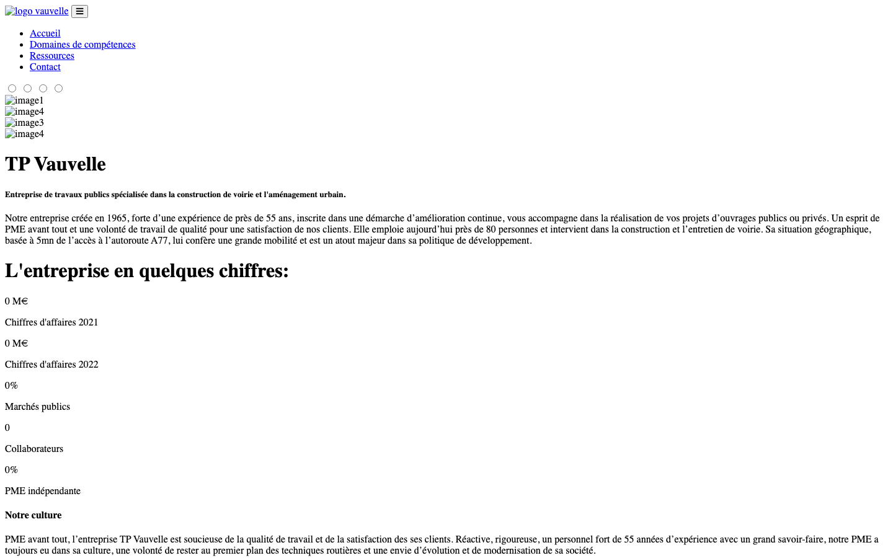
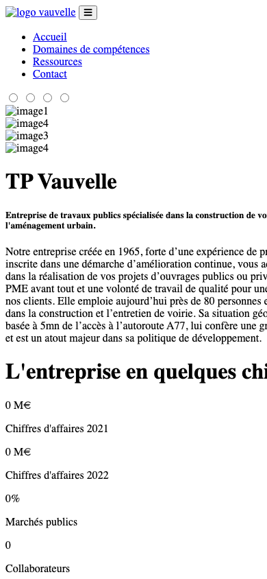
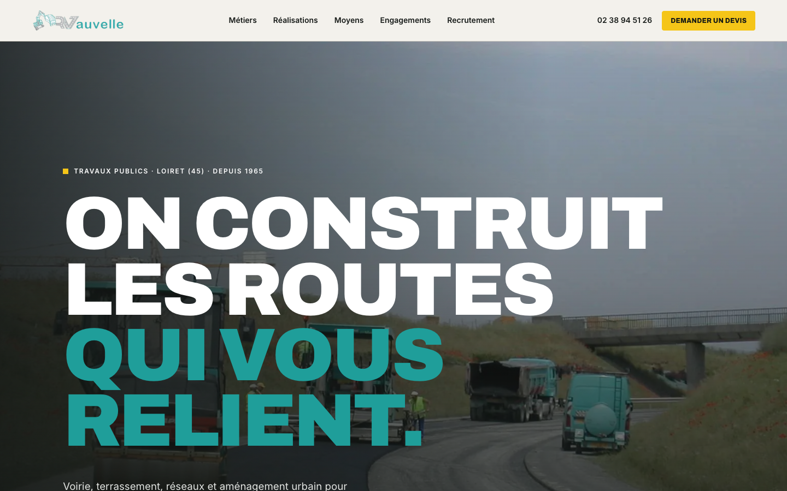
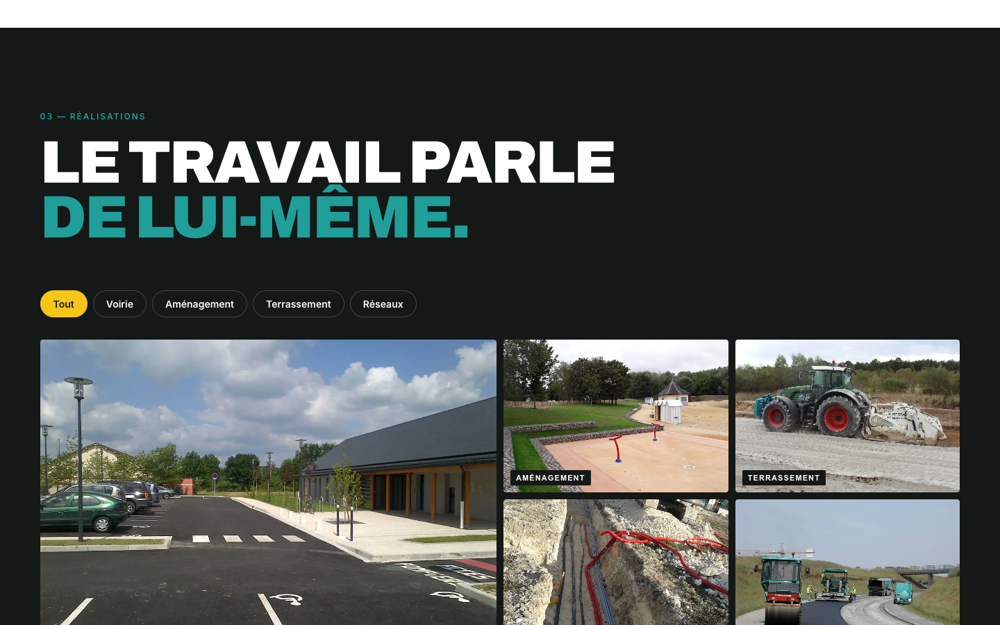
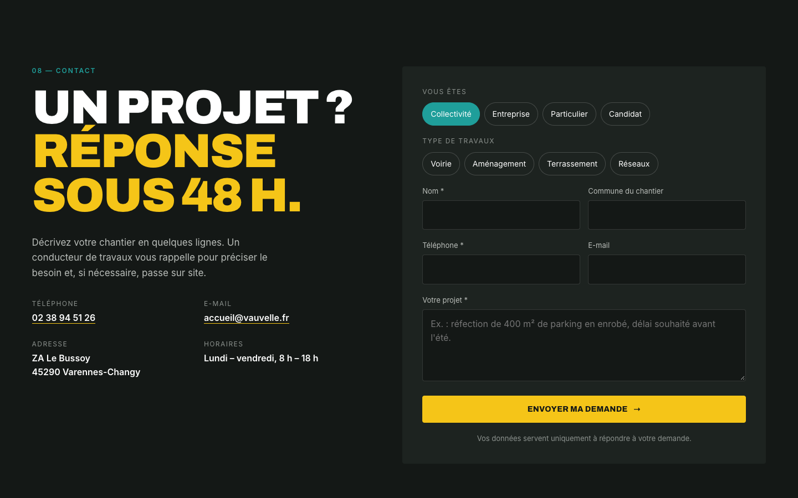
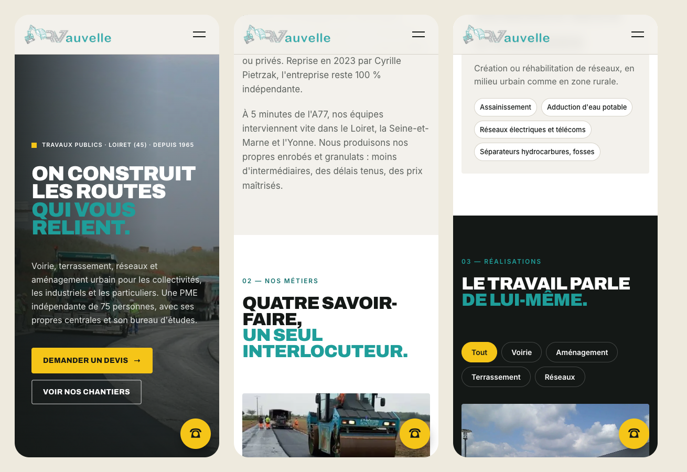

Diagnostic du site vauvelle.fr, estimation du manque à gagner, et ce qu'une refonte rapporterait.
TP Vauvelle, c'est 60 ans de métier, 75 collaborateurs, deux centrales d'enrobés et 12,5 M€ de chiffre d'affaires. Le site, lui, raconte l'inverse : aujourd'hui, un visiteur ne voit ni le logo, ni les photos, ni la mise en page, et les chiffres clés affichent « 0 M€ ».
Cause principale : le certificat de sécurité (HTTPS) n'est pas valide pour vauvelle.fr, et tous les styles, images et scripts du site sont appelés en HTTPS. Le navigateur les bloque. Le site est donc cassé pour 100 % des visiteurs, sur ordinateur comme sur mobile.
Site non sécurisé, affichage cassé, chiffres à zéro, aucun moyen de demander un devis en ligne.
Référencement quasi nul, bibliothèques obsolètes et vulnérables, images très lourdes, pas de recrutement.
Aucun outil de statistiques : impossible aujourd'hui de savoir combien de clients passent par le site.
Le site actuel fait perdre des clients au lieu d'en apporter. Pour les 30 % d'activité privée, il est invisible. Pour les 70 % de marchés publics, il abîme la crédibilité face aux acheteurs et maîtres d'œuvre qui vérifient l'entreprise en ligne. Une refonte est rentabilisée dès les premiers chantiers qu'elle apporte.
Capture réalisée le 30 septembre 2026 dans Google Chrome, à l'adresse vauvelle.fr. Aucune manipulation : c'est la page telle qu'elle s'affiche pour un client, un candidat ou un acheteur public.

Logo absent Photos du diaporama non chargées « 0 M€ » de chiffre d'affaires Aucune mise en page
Le serveur présente un certificat émis pour « cluster130.hosting.ovh.net », pas pour vauvelle.fr. En HTTPS, le navigateur affiche « Votre connexion n'est pas privée ». En HTTP, la page s'ouvre, mais toutes ses feuilles de style, scripts et images sont appelés en HTTPS : ils sont refusés.
Un particulier qui cherche « terrassement Loiret » et tombe sur cette page repart en quelques secondes. Un maître d'œuvre qui vérifie l'entreprise avant une consultation lit « 0 collaborateur » et un site qui semble abandonné. Google, de son côté, pénalise les sites non sécurisés.
| Gravité | Constat | Conséquence |
|---|---|---|
| Critique | Certificat HTTPS invalide pour vauvelle.fr et www.vauvelle.fr | Alerte de sécurité, perte de confiance, pénalité Google |
| Critique | Styles, images et scripts bloqués : tous appelés en HTTPS | Site affiché brut, sans logo ni photo |
| Critique | Chiffres clés à « 0 » : les compteurs ne s'animent qu'au défilement, via un script bloqué | L'entreprise paraît vide ou fermée |
| Critique | Aucun formulaire de devis, coordonnées reléguées en pied de page | Les demandes hors heures de bureau sont perdues |
| Majeur | Même titre sur les 9 pages, aucune meta description | Google ne sait pas quelle page proposer |
| Majeur | Ni sitemap.xml ni robots.txt (erreurs 404) | Indexation lente et incomplète |
| Majeur | jQuery 3.3.1 (2018), failles connues CVE-2019-11358 et CVE-2020-11022/11023 | Surface d'attaque inutile |
| Majeur | Images non optimisées : jusqu'à 4 128 px et 780 Ko pour une vignette | Pages lentes en 4G sur chantier |
| Majeur | Aucune statistique de visite (ni Analytics, ni Matomo, ni Search Console détectés) | Impossible de piloter ou de mesurer |
| Majeur | Pas de page recrutement alors que le secteur TP manque de bras | Candidats orientés vers les concurrents |
| Mineur | Contenus datés ou incohérents : « près de 55 ans » puis « près de 50 ans », © 2021, CA 2021-2022 | Image d'un site non entretenu |
| Mineur | Coquilles et anglais : « View more », « éléctriques », « réhabilation », « des ses clients » | Manque de sérieux perçu |
| Mineur | Structure HTML fragile : 3 titres H1 sur l'accueil, un H1 fermé par un H6, images nommées « image1 » | Accessibilité et SEO dégradés |
Chaque critère est noté sur 100 selon la grille d'audit VG : sécurité, affichage réel, mobile, référencement local, capacité à générer des demandes, qualité des contenus et vitesse. La note « nouveau site » correspond à la maquette livrée avec ce document.
Le point fort du site actuel, ce sont ses contenus : descriptions des métiers, matériel, politique environnement et sécurité, galeries photo. Ils ont été entièrement repris et mis en valeur dans la nouvelle version.
L'activité privée représente environ 30 % du chiffre d'affaires, soit près de 3,75 M€ : particuliers, industriels, agriculteurs, promoteurs. C'est sur ce segment que le site devrait apporter des demandes. Deux scénarios, volontairement prudents.
| Étape du calcul | Prudent | Médian |
|---|---|---|
| Recherches Google mensuelles sur les métiers du TP dans le 45, le 77 et le 89 | 1 500 | 2 000 |
| Part captée par un site bien positionné (top 3 local) | 8 % | 10 % |
| Visites qualifiées par mois | 120 | 200 |
| Taux de demande de devis (formulaire ou appel) | 2 % | 3 % |
| Demandes de devis par an | 29 | 72 |
| Taux de signature | 20 % | 25 % |
| Chantiers signés par an | 6 | 18 |
| Montant moyen d'un chantier privé (HT) | 15 k€ | 15 k€ |
| Chiffre d'affaires privé manqué par an | ≈ 90 k€ | ≈ 270 k€ |
| Marge brute associée (hypothèse 25 %) | ≈ 22 k€ | ≈ 68 k€ |
Sans page carrière, chaque poste passe par annonces payantes ou intérim. Deux recrutements par an via le site, c'est environ 8 k€ économisés.
70 % de l'activité. Non chiffré ici, mais un site cassé est un signal négatif lors des consultations et des visites de références.
Sans formulaire structuré, l'accueil traite par téléphone des demandes incomplètes qu'il faut ensuite requalifier.
Hypothèses à confirmer. Les volumes de recherche sont des ordres de grandeur pour un bassin rural de ce type ; ils seront mesurés précisément avec Google Search Console et l'outil de planification de mots-clés dès la mise en ligne. Le montant moyen et le taux de signature sont à ajuster avec les chiffres réels de l'entreprise.



Le turquoise des engins Vauvelle, le noir du bitume, le jaune de chantier. Des titres forts, des vraies photos de chantier.
Devis en 30 secondes, téléphone toujours visible, bouton d'appel flottant sur mobile, formulaire qualifié par profil et métier.
Zéro dépendance lourde, images WebP (près de 40 % plus légères), HTTPS, données structurées pour Google.

| Sujet | Site actuel | Nouveau site |
|---|---|---|
| Sécurité | Alerte « non sécurisé » | HTTPS valide, aucune bibliothèque vulnérable |
| Demande de devis | Numéro en pied de page | Formulaire qualifié + appel en un geste sur mobile |
| 1 titre pour 9 pages, pas de sitemap | Titres ciblés, fiche entreprise structurée (schema.org), zone d'intervention | |
| Réalisations | Photos non chargées | Galerie filtrable par métier, agrandissement plein écran |
| Recrutement | Absent | Postes ouverts, alternance, candidature directe |
| Chiffres clés | « 0 M€ », « 0 collaborateur » | 60 ans, 75 collaborateurs, 12,5 M€, 70 % de marchés publics |
| Pilotage | Aucune donnée | Suivi des visites et des demandes, rapport mensuel |
Validation de la maquette, des chiffres et des textes avec la direction.
Photos récentes, fiches réalisations avec lieu et client, offres d'emploi réelles.
Mise en ligne, certificat HTTPS, redirections des anciennes pages, Search Console.
Fiche Google Business, suivi des demandes, rapport mensuel et ajustements.